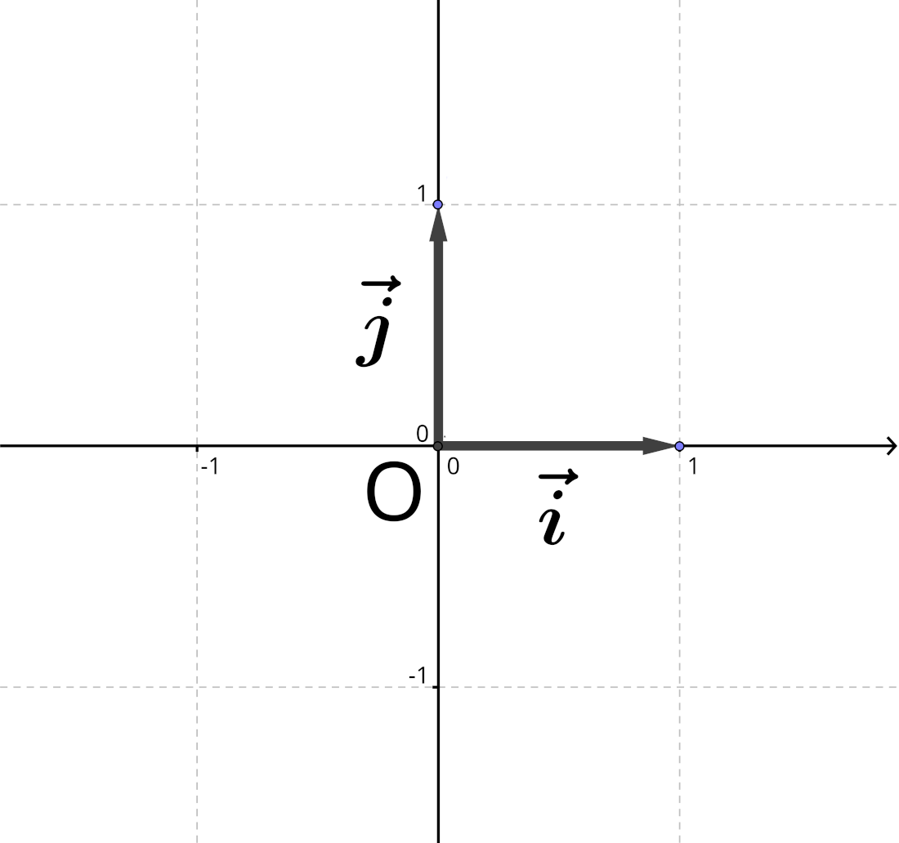
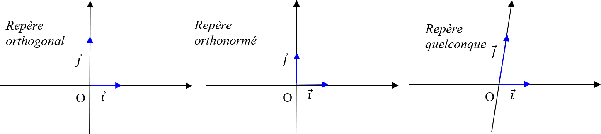

Vecteurs et coordonnées
Repère du plan
Rem
Trois points distincts $O$, $I$ et $J$ forment un repère, que l’on peut noter $\OIJ$.
L’origine $O$ et les unités $OI$ et $OJ$ permettent de graduer les axes $(OI)$ et $(OJ)$.
Si on pose $\vec{i}=\vec{OI}$ et $\vec{j}=\vec{OJ}$, alors ce repère se note également $\vOIJ$.

Definition : repère du plan
Definition
- On appelle repère du plan tout triplet $(O;\vec{i},\vec{j})$ où $O$ est un point et $\vec{i}$ et $\vec{j}$ sont deux vecteurs non colinéaires.
- Un repère est dit orthogonal si $\vec{i}$ et $\vec{j}$ ont des directions perpendiculaires.
- Un repère est dit orthonormé s’il est orthogonal et si $\vec{i}$ et $\vec{j}$ sont de même norme.

Coordonnées d’un vecteur
Définition : Coordonnées d’un vecteur
Definition
Soit $M$ un point d’un repère $\vOIJ$ et $\vec{u}$ tel que $\vec{OM} = \vec{u}$.
Les coordonnées du vecteur $\vec{u}$ sont les coordonnées du point $M$.
On note : $\qquad\boxed{\vec{u}(x, y)~\text{ou}~\vec{u}\coord{x}{y}}$.
Methode
Lire les coordonnées d’un vecteur

Dans cet exemple, pour aller de $A$ vers $B$, on effectue :
- Une translation de $3$ carreaux vers la droite $(+3)$
- une translation de $2$ carreaux vers le haut $(+2)$.
On trace ainsi un “chemin” de vecteurs $\vec{i}$ et $\vec{j}$ mis bout à bout reliant l’origine et l’extrémité du vecteur $\vec{AB}$.
Ainsi $~\vec{AB}= 3\vec{i} + 2\vec{j}$
Les coordonnées de $\vec{AB}$ sont donc $\coord{3}{2}$.
De même, les vecteurs suivants ont pour coordonnées :
- $\vec{AB}\coord{3}{2}$
- $\vec{u}\coord{3}{2}\qquad$ (et donc $\vec{AB}=\vec{u}$)
- $\vec{v}\coord{-1}{5}$
- $\vec{w}\coord{0}{-2}$
Propriété : coordonnées d’un vecteur dans un repère
Prop
Dans un repère $\vOIJ$, on considère les points $A(x_A;y_A)$ et $B(x_B;y_B)$.
Le vecteur $\vec{AB}$ a pour coordonnées :
$$\boxed{\vec{AB}\begin{pmatrix}x_B-x_A\\y_B-y_A\end{pmatrix}}$$
Exemple
Soient $A(1;1)$ et $B(4;2)$

Les coordonnées de $\vec{AB}$ sont $\begin{pmatrix}4-1\\2-1\end{pmatrix}$ donc $\quad\vec{AB}\begin{pmatrix}3\\1\end{pmatrix}$
Propriétés
Prop
Soit $\vec{u}$ et $\vec{v}$ deux vecteurs de coordonnées $\coord{x}{y}$ et $\coord{x’}{y’}$ dans un repère $\vOIJ$ et un réel $k$.
- $\boxed{\vec{u} = \vec{v}}$ équivaut à $\boxed{x = x’~\text{et}~y = y’}$
- Le vecteur $\boxed{\vec{u} + \vec{v}}$ a pour coordonnées $\boxed{\begin{pmatrix}{x+x’}\\{y+y’}\end{pmatrix}}$
- Le vecteur $\boxed{k\times\vec{u}}$ a pour coordonnées $\boxed{\begin{pmatrix}k\times x\\k\times y\end{pmatrix}}$
Exemple
Soient $\vec{u}\coord{-1}{2}~$, $~\vec{v}\coord{0.5}{-2}~$ et $~\vec{w}=2(\vec{u}+3\vec{v})$
On a :
- $3\vec{v}\coord{3\times0.5}{3\times -2}\quad\iff\quad 3\vec{v}\coord{1.5}{-6}$
- $\vec{u}+3\vec{v}\coord{-1+1.5}{2-6}\quad\iff\quad \vec{u}+3\vec{v}\coord{0.5}{-4}$
- $\vec{w}=2(\vec{u}+3\vec{v})\quad\iff\quad \vec{w}\coord{2\times 0.5}{2\times -4}\quad\iff\quad \vec{w}\coord{1}{-8}$
Methode
Calculer les coordonnées d’un point défini par une égalité vectorielle
Dans un repère, soient les points $A(1;2)$, $B(-4;3)$, $C(1;-2)$.
Déterminons les coordonnées de $D$ tel que $ABCD$ soit un parallélogramme.

$ABCD$ est un parallélogramme si et seulement si $\vec{AB}=\vec{DC}$
On a :
- $\vec{AB}\coord{-4-1}{3-2}=\coord{-5}{1}$
- $\vec{DC}\coord{1-x_D}{-2-y_D}$
Donc $\begin{cases}1-x_D=-5\\-2-y_D=1\end{cases}~\iff~\begin{cases}x_D=6\\y_D=-3\end{cases}$
Norme d’un vecteur
Prop
Soit $\vec{u}$ un vecteur de coordonnées $\coord{x}{y}$ dans un repère $\vOIJ$.
On a : $$\boxed{\norm{\vec{u}} = \sqrt{x^2 +y^2 }}$$
Exemple
Soit $\vec{u}\coord{3}{1}$.
On a : $\quad\norm{\vec{u}} = \sqrt{x^2 +y^2 } = \sqrt{3^2 +1^2 }= \sqrt{10}$